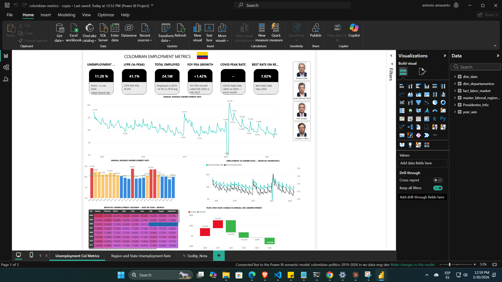
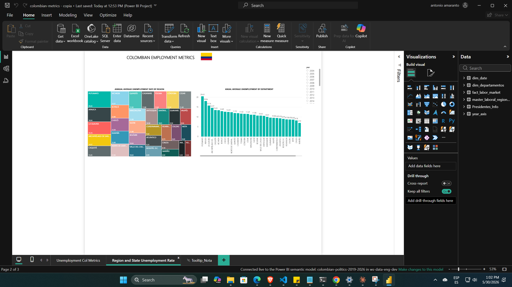

Ingeniería de Datos & Mercado Laboral
Colombian Labor Market Analysis
Análisis histórico profundo (2004-2026) sobre las tendencias de desempleo, crecimiento de la fuerza laboral y el impacto de los periodos presidenciales en Colombia.
Resumen Estadístico 2004-2026
14.3%Promedio 2004
20.9%Pico COVID (2020)
+24.1MOcupados (Feb 2026)
10.0%Promedio 2026 YTD
Dashboard Deep Dive
